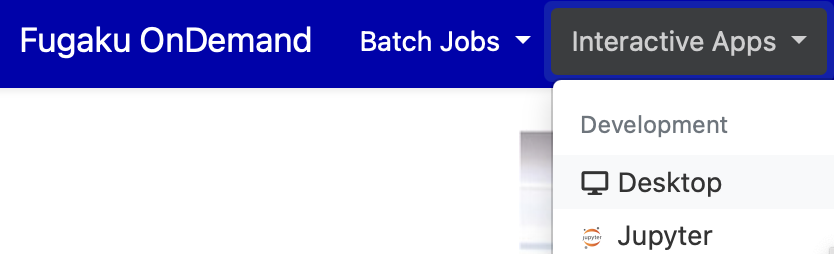

3. 対話アプリケーション
対話アプリケーションとは、「富岳」やプリポスト環境の計算ノード上で実行されるアプリケーションを、ユーザが対話的に操作・制御しながら計算を進める形式のアプリケーションです。下記の対話アプリケーションが利用可能です。
| Category | Application |
|---|---|
| Development | Remote Desktop, JupyterLab, MATLAB, VSCode, RStudio, Terminal (ttyd) |
| Profiler | NVIDIA Visual Profiler, NVIDIA Nsight Compute, NVIDIA Nsight Systems, Vampir |
| Viewer | AVS/Express, C-Tools, GaussView, Gnuplot, GrADS, ImageJ, MOLDEN, OpenMX viewer, OVITO, Paraview, PyMOL, SALMON view, Smokeview, VESTA, VMD, VisIt, XCrySDen |
| Workflow | WHEEL |
例として、リモートデスクトップの利用方法を説明します。メニューバーの「Interactive Apps」から「Desktop」を選択します。
計算リソースなどを入力するためのWebフォームが表示されます。入力項目はアプリケーション毎に異なりますが、可視化アプリケーションの場合、GPU数を1以上に設定するとVirtualGLが自動的に利用されるため、高速化が見込めます。入力後に「Submit」をクリックすると、「富岳」にジョブが投入されます。

ジョブ投入直後は、右上に「Queued」と記述された画面が表示されます。これは、ジョブは実行待ちであることを表しています。

ジョブが計算ノードで起動すると「Running」という表示に変わり、「Launch Desktop」というボタンが表示されます。「Commpression（圧縮レベル）と「Image Quality（画質レベル）」を適当な値に設定して、「Launch Desktop」のボタンをクリックします。

リモートデスクトップがWebブラウザに表示されます。リモートデスクトップを終了させたい場合は、「Delete」ボタンをクリックするか、リモートデスクトップの左上の「Applications」から「Log Out」をクリックしてください。Webブラウザのリモートデスクトップのタブを消すだけでは終了されないことに注意してください。
「View Only (Share-able Link) 」ボタンをクリックすると、ミラーリングされたリモートデスクトップが新しいタブで開きます。ミラーリングされた画面は操作できません。このタブのURLをメール等で送信することで、画面共有を行うことができます（「富岳」にアカウントを持っているユーザ間でのみ画面共有が可能です）。

メニューバーの「My Interactive Sessions」をクリックすると、実行中の対話アプリケーションの一覧が表示されます。この画面から対話アプリケーションを終了させることも可能です。